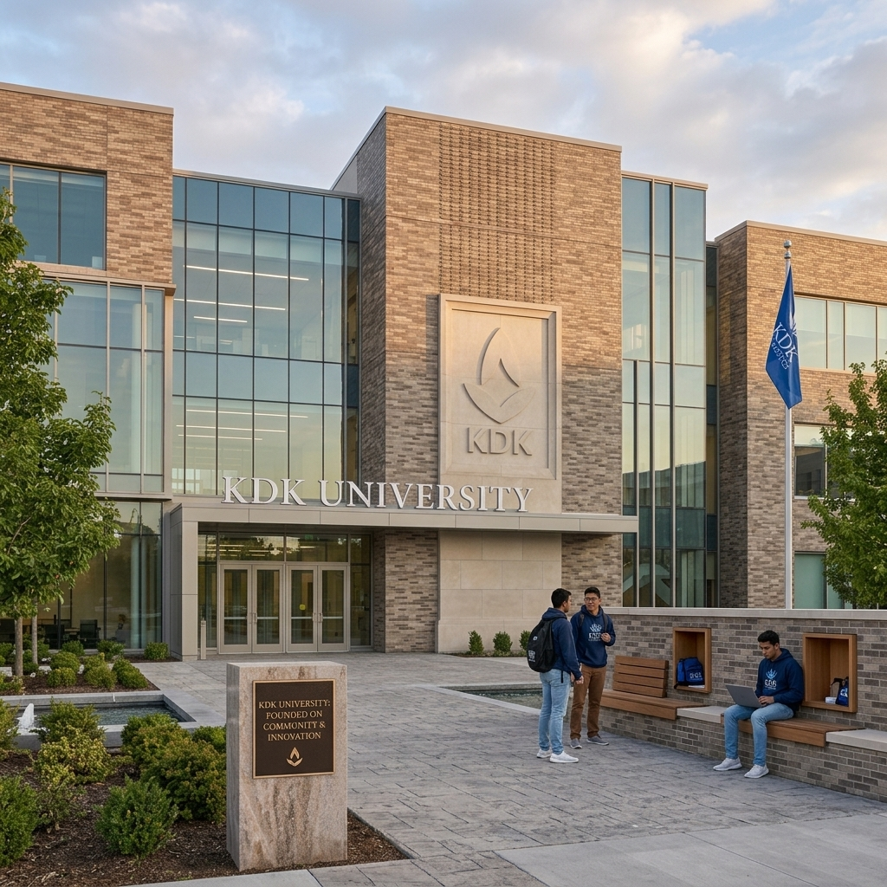

Practical learning
Build projects, connect theory to real tasks and develop a portfolio you can explain with confidence.

About KDK
A university concept built around practical learning, curiosity and a strong student community.
Meet campus lifeOur approach
We believe studying should connect ideas with practice. KDK brings together technology-focused programs, collaborative projects and spaces to explore beyond the classroom.
From the first question to the finished project, learning is a process of trying, sharing and improving.
Explore our programs →
What matters here
Build projects, connect theory to real tasks and develop a portfolio you can explain with confidence.
Ask questions, exchange ideas and learn with students who bring a different perspective.
Make time for sport, student clubs and the friendships that shape university life.
A look around
Study, collaborate and recharge. Explore the campus imagery used throughout our university concept.


Behind this project
KDK is a fictional university website created for the Web Technologies final project, group SE-2515. Its programs, fees and application process are demonstrations, not an offer of real university admission.
Project team member
Project team member
Project team member
Start with your interests. We will help you find the next step.